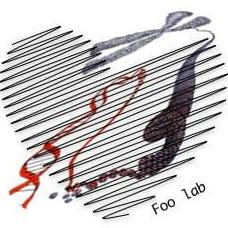
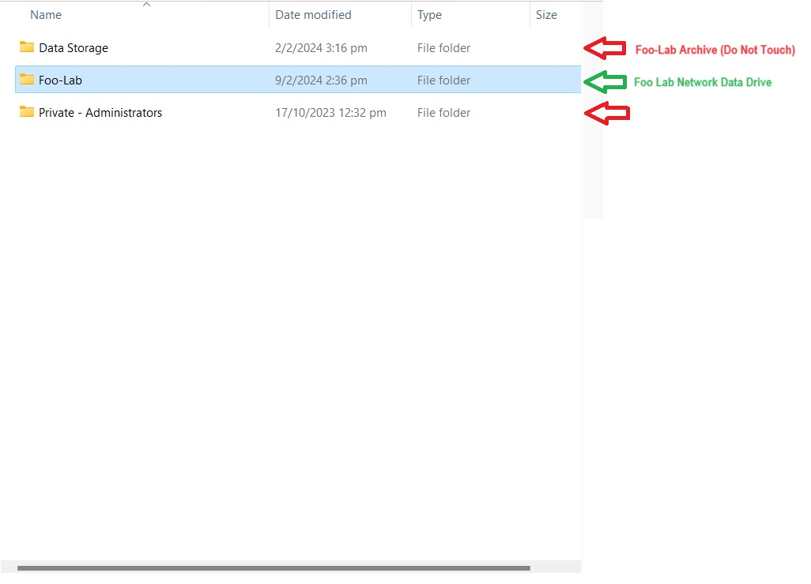
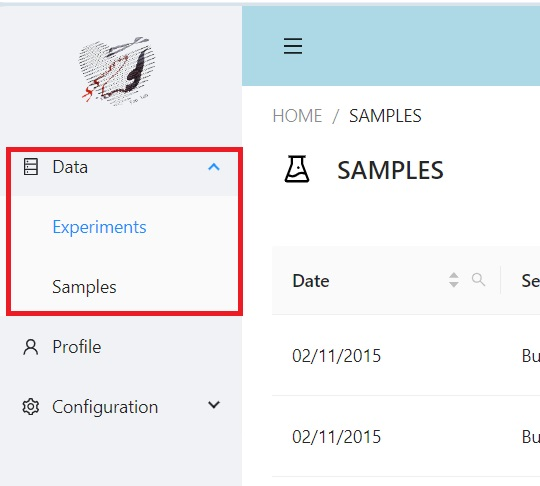

Welcome to Foo Lab (Dry Lab) on-boarding @ NUS CVRI

Getting Started:
For access to Foo-Lab network drive, please inform Mick Lee (mick.lee@u.nus.edu), or Erielle (emfv-09@nus.edu.sg) to add you into the Foo-Lab list of members / Administrators.
Mounting Foo-Lab Network drive in NUS on Window network drive system
Head over to your PC drive folder, and Add Network Locations (Right Click):

Specifiy the location of your website as the following:

Foo-Lab network drive folder will be accessible under network drive :

Mounting Foo-Lab Network drive in NUS on Ubuntu and Ubuntu WSL systems using CIFs utils / SMB protocol
Install cifs-utils on ubuntu:
sudo apt update
sudo apt-get install cifs-utilsCreate a mount point in your /mnt directory:
sudo mkdir /mnt/uss-foolabCreate a credentials file - in /etc/cifs-credentials using vim or nanosudo vi /etc/cifs-credentials
username=NUSNETID
password=NUSNETPW
domain=nusstf
Allow special permissions to cifs-credentialssudo chmod 600 /etc/cifs-credentials
edit /etc/fstab file and add the following entry
vi /etc/fstab
//hpcnas.nus.edu.sg/uss-foolab /mnt/uss-foolab cifs credentials=/etc/cifs-credentials 0 0
Create folder to mount network volume in /mnt and mount all volumesudo mkdir /mnt/uss-foolab
sudo mount -a
Otherwise try using DrvFs wsl plugin protocol :sudo mount -t drvfs //hpcnas.nus.edu.sg/uss-foolab /mnt/uss-foolab -o username=NUSNETID````
RULES of uss-foolab network drive
Access the Foo-Lab Folder. DO NOT TOUCH the Data Storage folder (Containing Archival/legacy files) 
Deposit your Wet / Dry Data, Figures, and Work into your respective work folder.
(If you did not find your name, make a new folder with your name)

How to Deposit In-house Next-Generation Sequencing Data (Under maintainence)
- Go to Softwares >> Foo Lab Data Catalog
- Key in your username (name) and password

Two things to fill up (Sample Information and Experiment Information)
Note: Each Experiment should be linked to One Library ID (Assigned by Novogene/Macrogen/Other Sequencing Providers), and One experiment can have multiple samples
e.g Macrogen: HNXXXXXXX or XXXXKNO-XXXX
Novogene: X401SCXXXXXXXX-Z01-F00X

- Fill up experiment information as detailed as possible - Like how you want people to understand. An example below

Key in all the sample information within the specified experiment.
For every sample, key in the directory to your data - to the uss-foolab network drive
 6. Make sure your files are all there!
6. Make sure your files are all there!